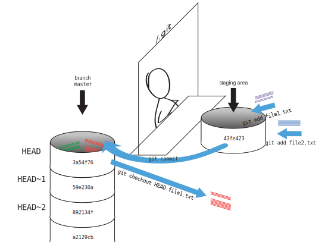

Exploring History
Learning Objectives
- Explain what the HEAD of a repository is and how to use it.
- Identify and use Git commit numbers.
- Compare various versions of tracked files.
- Restore old versions of files.
As we saw in the previous lesson, we can refer to commits by their
identifiers. You can refer to the most recent commit of the working
directory by using the identifier HEAD.
We've been adding one line at a time to mars.txt, so it's easy to track our
progress by looking, so let's do that using our HEADs. Before we start,
let's make a change to mars.txt.
$ nano mars.txt
$ cat mars.txt
Cold and dry, but everything is my favorite color
The two moons may be a problem for Wolfman
But the Mummy will appreciate the lack of humidity
An ill-considered change
Now, let's see what we get.
$ git diff HEAD mars.txt
diff --git a/mars.txt b/mars.txt
index b36abfd..0848c8d 100644
--- a/mars.txt
+++ b/mars.txt
@@ -1,3 +1,4 @@
Cold and dry, but everything is my favorite color
The two moons may be a problem for Wolfman
But the Mummy will appreciate the lack of humidity
+An ill-considered change.
which is the same as what you would get if you leave out HEAD (try it). The
real goodness in all this is when you can refer to previous commits. We do
that by adding ~1 to refer to the commit one before HEAD.
$ git diff HEAD~1 mars.txt
If we want to see the differences between older commits we can use git diff
again, but with the notation HEAD~1, HEAD~2, and so on, to refer to them:
$ git diff HEAD~2 mars.txt
diff --git a/mars.txt b/mars.txt
index df0654a..b36abfd 100644
--- a/mars.txt
+++ b/mars.txt
@@ -1 +1,3 @@
Cold and dry, but everything is my favorite color
+The two moons may be a problem for Wolfman
+But the Mummy will appreciate the lack of humidity
We could also use git show which shows us what changes we made at an older commit as well as the commit message, rather than the differences between a commit and our working directory that we see by using git diff.
$ git show HEAD~2 mars.txt
commit 34961b159c27df3b475cfe4415d94a6d1fcd064d
Author: Vlad Dracula <vlad@tran.sylvan.ia>
Date: Thu Aug 22 10:07:21 2013 -0400
Add concerns about effects of Mars' moons on Wolfman
diff --git a/mars.txt b/mars.txt
index df0654a..315bf3a 100644
--- a/mars.txt
+++ b/mars.txt
@@ -1 +1,2 @@
Cold and dry, but everything is my favorite color
+The two moons may be a problem for Wolfman
In this way,
we can build up a chain of commits.
The most recent end of the chain is referred to as HEAD;
we can refer to previous commits using the ~ notation,
so HEAD~1 (pronounced "head minus one")
means "the previous commit",
while HEAD~123 goes back 123 commits from where we are now.
We can also refer to commits using
those long strings of digits and letters
that git log displays.
These are unique IDs for the changes,
and "unique" really does mean unique:
every change to any set of files on any computer
has a unique 40-character identifier.
Our first commit was given the ID
f22b25e3233b4645dabd0d81e651fe074bd8e73b,
so let's try this:
$ git diff f22b25e3233b4645dabd0d81e651fe074bd8e73b mars.txt
diff --git a/mars.txt b/mars.txt
index df0654a..b36abfd 100644
--- a/mars.txt
+++ b/mars.txt
@@ -1 +1,3 @@
Cold and dry, but everything is my favorite color
+The two moons may be a problem for Wolfman
+But the Mummy will appreciate the lack of humidity
That's the right answer, but typing out random 40-character strings is annoying, so Git lets us use just the first few characters:
$ git diff f22b25e mars.txt
diff --git a/mars.txt b/mars.txt
index df0654a..b36abfd 100644
--- a/mars.txt
+++ b/mars.txt
@@ -1 +1,3 @@
Cold and dry, but everything is my favorite color
+The two moons may be a problem for Wolfman
+But the Mummy will appreciate the lack of humidity
All right! So we can save changes to files and see what we've changed—now how can we restore older versions of things? Let's suppose we accidentally overwrite our file:
$ nano mars.txt
$ cat mars.txt
We will need to manufacture our own oxygen
git status now tells us that the file has been changed,
but those changes haven't been staged:
$ git status
On branch master
Changes not staged for commit:
(use "git add <file>..." to update what will be committed)
(use "git checkout -- <file>..." to discard changes in working directory)
modified: mars.txt
no changes added to commit (use "git add" and/or "git commit -a")
We can put things back the way they were
by using git checkout:
$ git checkout HEAD mars.txt
$ cat mars.txt
Cold and dry, but everything is my favorite color
The two moons may be a problem for Wolfman
But the Mummy will appreciate the lack of humidity
As you might guess from its name,
git checkout checks out (i.e., restores) an old version of a file.
In this case,
we're telling Git that we want to recover the version of the file recorded in HEAD,
which is the last saved commit.
If we want to go back even further,
we can use a commit identifier instead:
$ git checkout f22b25e mars.txt
$ cat mars.txt
Cold and dry, but everything is my favorite color
$ git status
# On branch master
Changes to be committed:
(use "git reset HEAD <file>..." to unstage)
# Changes not staged for commit:
# (use "git add <file>..." to update what will be committed)
# (use "git checkout -- <file>..." to discard changes in working directory)
#
# modified: mars.txt
#
no changes added to commit (use "git add" and/or "git commit -a")
Notice that the changes are on the staged area.
Again, we can put things back the way they were
by using git checkout:
$ git checkout -f master mars.txt
Don't Lose Your HEAD
Above we used
$ git checkout f22b25e mars.txt
to revert mars.txt to its state after the commit f22b25e.
If you forget mars.txt in that command, Git will tell you that "You are in
'detached HEAD' state." In this state, you shouldn't make any changes.
You can fix this by reattaching your head using git checkout master
It's important to remember that
we must use the commit number that identifies the state of the repository
before the change we're trying to undo.
A common mistake is to use the number of
the commit in which we made the change we're trying to get rid of.
In the example below, we want to retrieve the state from before the most
recent commit (HEAD~1), which is commit f22b25e:

So, to put it all together, here's how Git works in cartoon form:

Simplifying the Common Case
If you read the output of git status carefully,
you'll see that it includes this hint:
(use "git checkout -- <file>..." to discard changes in working directory)
As it says,
git checkout without a version identifier restores files to the state saved in HEAD.
The double dash -- is needed to separate the names of the files being recovered
from the command itself:
without it,
Git would try to use the name of the file as the commit identifier.
The fact that files can be reverted one by one tends to change the way people organize their work. If everything is in one large document, it's hard (but not impossible) to undo changes to the introduction without also undoing changes made later to the conclusion. If the introduction and conclusion are stored in separate files, on the other hand, moving backward and forward in time becomes much easier.
Recovering Older Versions of a File
Jennifer has made changes to the Python script that she has been working on for weeks, and the modifications she made this morning "broke" the script and it no longer runs. She has spent ~ 1hr trying to fix it, with no luck...
Luckily, she has been keeping track of her project's versions using Git! Which commands below will
let her recover the last committed version of her Python script called
data_cruncher.py?
$ git checkout HEAD$ git checkout HEAD data_cruncher.py$ git checkout HEAD~1 data_cruncher.py$ git checkout <unique ID of last commit> data_cruncher.pyBoth 2 and 4
Reverting a Commit
Jennifer is collaborating on her Python script with her colleagues and
realizes her last commit to the group repository is wrong and wants to
undo it. Jennifer needs to undo correctly so everyone in the group
repository gets the correct change. git revert [wrong commit ID]
will make a new commit that undoes Jennifer's previous wrong
commit. Therefore git revert is different than git checkout [commit
ID] because checkout is for local changes not committed to the
group repository. Below are the right steps and explanations for
Jennifer to use git revert, what is the missing command?
____ # Look at the git history of the project to find the commit ID
Copy the ID (the first few characters of the ID, e.g. 0b1d055).
git revert [commit ID]Type in the new commit message.
Save and close
Understanding Workflow and History
What is the output of cat venus.txt at the end of this set of commands?
$ cd planets
$ nano venus.txt #input the following text: Venus is beautiful and full of love
$ git add venus.txt
$ nano venus.txt #add the following text: Venus is too hot to be suitable as a base
$ git commit -m "Comment on Venus as an unsuitable base"
$ git checkout HEAD venus.txt
$ cat venus.txt #this will print the contents of venus.txt to the screen
1.
Venus is too hot to be suitable as a base
2.
Venus is beautiful and full of love
3.
Venus is beautiful and full of love
Venus is too hot to be suitable as a base
4.
Error because you have changed venus.txt without committing the changes
SolutionClick to expand
Checking Understanding of git diff
Consider this command: git diff HEAD~3 mars.txt. What do you predict this command
will do if you execute it? What happens when you do execute it? Why?
Try another command, git diff [ID] mars.txt, where [ID] is replaced with
the unique identifier for your most recent commit. What do you think will happen,
and what does happen?
Getting Rid of Staged Changes
git checkout can be used to restore a previous commit when unstaged changes have
been made, but will it also work for changes that have been staged but not committed?
Make a change to mars.txt, add that change, and use git checkout to see if
you can remove your change.
Explore and Summarize Histories
Exploring history is an important part of git, often it is a challenge to find the right commit ID, especially if the commit is from several months ago.
Imagine the planets project has more than 50 files.
You would like to find a commit with specific text in mars.txt is modified.
When you type git log, a very long list appeared,
How can you narrow down the search?
Recorded that the git diff command allow us to explore one specific file,
e.g. git diff mars.txt. We can apply the similar idea here.
$ git log mars.txt
Unfortunately some of these commit messages are very ambiguous e.g. update files.
How can you search through these files?
Both git diff and git log are very useful and they summarize different part of the history for you.
Is that possible to combine both? Let's try the following:
$ git log --patch mars.txt
You should get a long list of output, and you should be able to see both commit messages and the difference between each commit.
Question: What does the following command do?
$ git log --patch HEAD~3 *.txt
Key Points
git diffdisplays differences between commits.git checkoutrecovers old versions of files.
CC BY 4.0 - Based on git-novice © 2016–2017 Software Carpentry Foundation